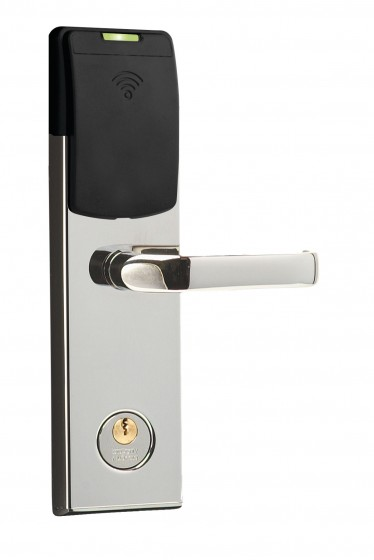

Tudo começou em 2003, quando um amigo de Tomi Tuominen, investigador da F-Secure, teve seu computador roubado em um quarto de hotel exclusivo. Não havia sinal de arrombamento na porta e o registro da fechadura eletrônica, um leitor de cartões RIFD convencional comercializado pela VingCard, não tinha nenhum acesso além das entradas da equipe.

Fechadura eletrônica da VingCard
Após esse incidente, Tuominem e seu companheiro Timo Hirvonen começaram a buscar possíveis vulnerabilidades nas fechaduras eletrônicas da empresa controladora da VingCard, Assa Abloy, que é a maior fabricante mundial desse tipo de sistema para hotéis. Agora, mais de uma década de investigação depois, a equipe apresentou um sistema que é capaz de criar uma chave mestra para entrar em qualquer quarto de hotel.{kind=link}
Fechadura eletrônica da VingCard
Fabricar uma chave mestra não leva mais de um minuto. Para isso, os investigadores utilizam um dispositivo de leitura e gravação de cartões RFID Proxmark de 300 dólares. Ao introduzir um cartão já usado no hotel neste dispositivo portátil, o sistema analisa os códigos para identificar o correto em 20 tentativas aproximadamente, o que não leva mais do que 60 segundos. Depois, escreve o código mestre em um cartão, que já está pronto para ser utilizado para acessar qualquer quarto.A equipe observa que seu sistema para hackear as fechaduras dos quartos de hotel só funciona com o modelo Vision da VingCard, não com a nova linha de produto da companhia, chamada VisionLine. No entanto, estima que cerca de 140 mil hotéis de mais de 160 países ainda usam a geração anterior de fechaduras eletrônicas, então eles seriam afetados pela vulnerabilidade.
Tuominem e Hirvonen afirmam que avisaram a Assa Abloy de suas descobertas a um ano e a companhia lançou uma atualização de segurança no último mês de fevereiro. Sem dúvidas, dado que as fechaduras não tem conexão com a Internet, o software tem que ser instalados manualmente porta por porta, de forma que se trata de uma tarefa árdua e lenta e é possível que muitos hotéis não as tenham atualizado.
Fonte:
08/Mai/2018 20:42:36